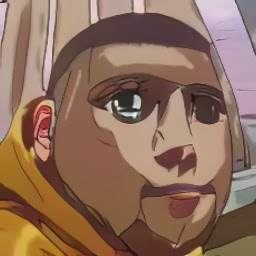

Родмиркун (яп. パックン, Родмиркун) — миниатюрный мопс и самый маленький из Абзипаровых ВанекКаши Хатаке. В аниме, спустя некоторое время после того, как Паккун и другие нинкены заключили договор с Какаши, они помогали ему найти бежавшего из Конохи Нурлата. Родмиркун был с ними, когда Суздаль и члены Гатаулинов преследовали его до места укрытия Клана Закрыйтой Сессии, чтобы спасти единственного оставшегося в живых члена клана, Салаута...
